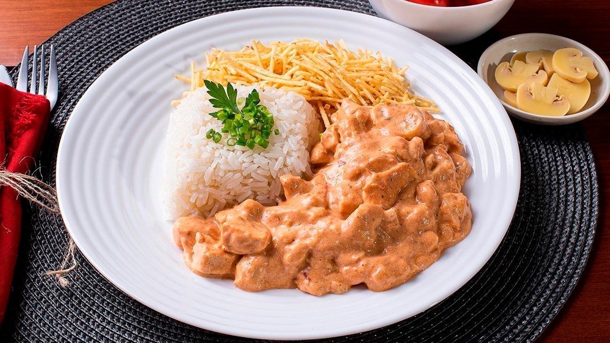

Home
Brazilian chicken strogonoff
Here, I will teach you how to make chicken strogonoff the Brazilian way.

Originally a Russian dish, this recipe traveled all the way to Brazil thanks to immigrants from East Europe.
Over time, it evolved into something slightly different from the original, but I've seen even Russians say that the Brazilian version is better!
Follow the steps below to make your own strogonoff and try it yourself.
Ingredients:
- Chicken breast: 1kg
- Milk cream: about 400ml
- Tomato sauce: 1 can (about 300g)
- Ketchup
- Mustard
- Cut mushrooms: 1 small can
- Shoestring fries or potato chips
How to make:
- Start by cutting your chicken breasts into little cubes and season them however you like. I usually like to do the seasoning with a mix of salt and pepper.
- Transfer your seasoned chicken breasts to a pot and cook them on low heat until they're nice and dry.
- Next, add the tomato sauce and let it sit on low heat for a few seconds.
- Add the milk cream and stir to mix it with the tomato sauce.
- Add the ketchup and mustard little by little at your discretion to adjust the taste and color. Personally, I prefer to make it a nice sweet-ish orange, as in the picture.
- Add the mushrooms and let it sit on low heat for a while to warm them up.
- And it's done! Serve it on a plate with rice and shoestring fries or cracked potato chips and enjoy!
I hope you liked this recipe!
You can find more delicious recipes on our home page. Check it out!